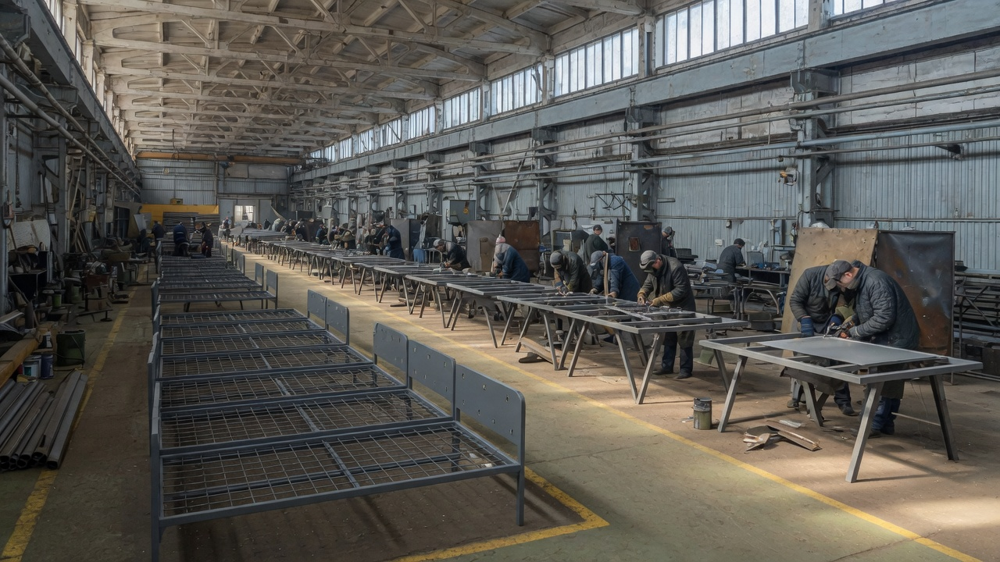

Главная / О компании
О компании

Нижний Новгород
Производственная компания с собственной площадкой
ООО «Мебель-Сервис» — производственная компания из Нижнего Новгорода с собственным производственным комплексом площадью более 4 000 м².
Мы объединяем многолетний опыт производства, собственные технологические и производственные мощности и современные подходы к организации работы. Сегодня компания развивает направление металлической и корпусной мебели, ориентированной на интенсивную эксплуатацию и оснащение объектов различного назначения.
Производственная база сформирована на основе многолетнего опыта работы с металлическими конструкциями, тентовой продукцией и сопутствующими изделиями. Это позволяет уверенно работать с металлом, организовывать серийное производство и обеспечивать стабильное качество.
Для кого работаем
Ориентированы прежде всего на оптовые, комплексные и крупные серийные заказы. Производим мебель для военных и ведомственных объектов, общежитий, образовательных и социальных учреждений, промышленных и административных помещений.
Собственное производство — ключевое преимущество
Производственные мощности позволяют организовать полный цикл изготовления продукции и контролировать качество на всех основных этапах.
Самостоятельно выполняем производственные операции, работаем с металлом и ЛДСП, изготавливаем металлокаркасы, осуществляем сборку и контроль готовых изделий.
Собственное производство даёт главное — контроль над качеством, сроками и стоимостью. Можем оперативно масштабировать выпуск, адаптировать изделия под требования заказчика и обеспечивать поставки крупных партий.
Основные направления
Металлическая мебель
Прочная и функциональная мебель для объектов, где особенно важны надежность и устойчивость к интенсивной эксплуатации.
Мебель на металлокаркасе
Практичные решения с металлическим основанием и элементами из ЛДСП, рассчитанные на длительное использование.
Мебель для специальных объектов
Решения для армии, ведомственных организаций, общежитий и других объектов с высокими требованиями к надежности, функциональности и объемам поставки.
Изготовление по техническому заданию
Адаптируем конструкцию, размеры, комплектацию и другие параметры продукции под задачи конкретного проекта.
Производитель, способный выполнять большие задачи
Мы понимаем специфику крупных поставок, а собственная производственная база и выстроенные процессы позволяют работать как с отдельными позициями, так и с комплексным оснащением объектов.
Готовы выполнять крупные серийные заказы, обеспечивая единые требования к продукции, стабильность поставок и контролируемое качество каждой партии.
Строим мебельное направление на базе реального производственного предприятия, накопленного опыта и собственной инфраструктуры.
Наши преимущества
Собственное производство
Производственный комплекс площадью более 4 000 м² позволяет контролировать основные этапы изготовления и не зависеть от сторонних производителей.
Многолетний производственный опыт
Большой практический опыт работы с металлом, конструкциями и тентовой продукцией. Эти компетенции стали фундаментом мебельного производства.
Крупные объемы
Мощности позволяют работать с серийными и оптовыми заказами, в том числе в рамках комплексного оснащения объектов.
Контроль качества
Контролируем продукцию на ключевых этапах: прочность конструкций, качество материалов, сборка, соответствие ТЗ.
Гибкость производства
Оперативно адаптируем продукцию под требования проекта и выпускаем изделия в необходимых объемах.
Конкурентная стоимость
Производим мебель самостоятельно, без лишних посредников — оптимальная стоимость для крупных заказчиков.